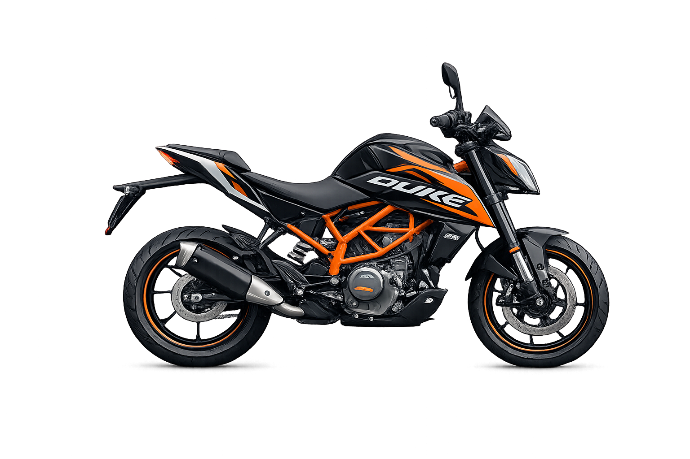
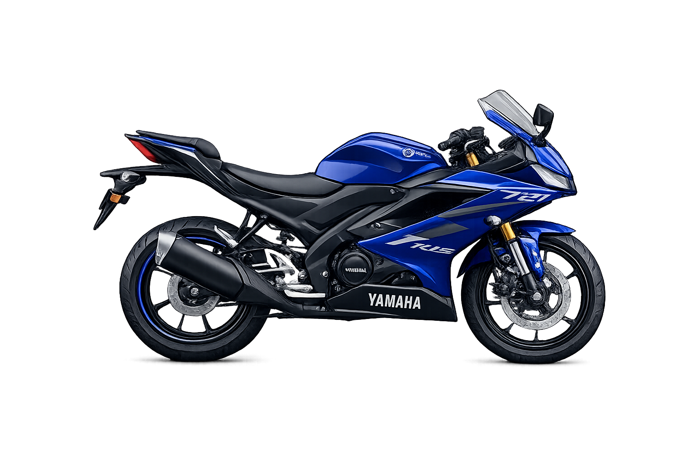
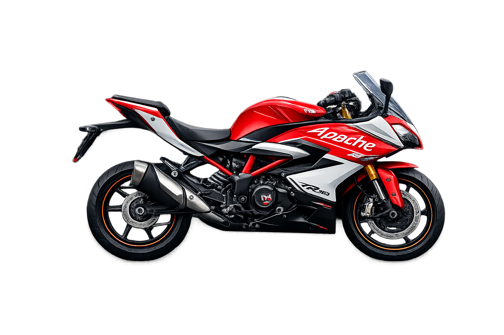

Sport Bikes
Designed for sharp handling, acceleration, and high-performance riding.
Who Should Buy
Riders who enjoy aggressive design, fast response, and spirited weekend rides.
Strengths
Powerful engines, aerodynamic styling, and premium riding dynamics.
KTM Duke 200

The KTM Duke 200 is a powerful naked street bike known for its aggressive styling and sharp performance. Powered by a 200cc liquid-cooled engine, it delivers quick acceleration and responsive handling, making it ideal for city riding and spirited rides on open roads. With its lightweight frame, bold design, and advanced features, the Duke 200 is popular among riders who want a sporty and energetic motorcycle experience.
R-15

The R-15 The Yamaha YZF‑R15 is a popular entry-level sport bike known for its aggressive design and advanced features. Powered by a 155cc liquid-cooled engine with Variable Valve Actuation (VVA), it delivers strong performance and excellent fuel efficiency. Its aerodynamic bodywork, sharp styling, and sporty riding position make it a favorite among young riders who want a race-inspired motorcycle for both city rides and highway cruising.
RR-310

The TVS Apache RR 310 is a fully faired sport bike designed for performance and style. Powered by a 312cc liquid-cooled engine, it offers strong acceleration, smooth handling, and advanced technology like ride modes and a digital TFT display. With its aerodynamic design, sharp styling, and comfortable sport riding position, the RR 310 is built for riders who want a premium sport bike experience on both city roads and highways.